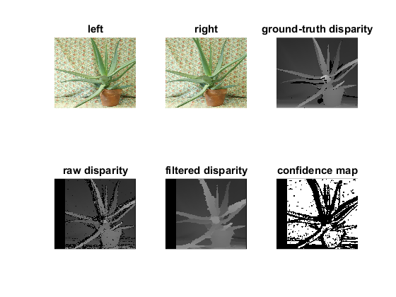

Disparity Filtering Demo
In this tutorial you will learn how to use the disparity map post-filtering to improve the results of cv.StereoBM and cv.StereoSGBM algorithms.
Sources:
Contents
Introduction
Stereo matching algorithms, especially highly-optimized ones that are intended for real-time processing on CPU, tend to make quite a few errors on challenging sequences. These errors are usually concentrated in uniform texture-less areas, half-occlusions and regions near depth discontinuities. One way of dealing with stereo-matching errors is to use various techniques of detecting potentially inaccurate disparity values and invalidate them, therefore making the disparity map semi-sparse. Several such techniques are already implemented in the StereoBM and StereoSGBM algorithms. Another way would be to use some kind of filtering procedure to align the disparity map edges with those of the source image and to propagate the disparity values from high- to low-confidence regions like half-occlusions. Recent advances in edge-aware filtering have enabled performing such post-filtering under the constraints of real-time processing on CPU.
The provided example has several options that yield different trade-offs between the speed and the quality of the resulting disparity map. Both the speed and the quality are measured if the user has provided the ground-truth disparity map. In this tutorial we will take a detailed look at the default pipeline, that was designed to provide the best possible quality under the constraints of real-time processing on CPU.
Options
% left/right views of the stereopair %left_im = 'ambush_5_left.jpg'; %right_im = 'ambush_5_right.jpg'; left_im = fullfile(mexopencv.root(),'test','aloeL.jpg'); right_im = fullfile(mexopencv.root(),'test','aloeR.jpg'); % optional ground-truth disparity (MPI-Sintel or Middlebury format), % set it to empty string if not available %GT_path = ''; GT_path = fullfile(mexopencv.root(),'test','aloeGT.png'); % stereo matching method: 'bm' or 'sgbm' algo = 'bm'; % used post-filtering: 'wls_conf' or 'wls_no_conf' filt = 'wls_conf'; % force stereo matching on full-sized views to improve quality no_downscale = false; % parameter of stereo matching: max disparity and window size max_disp = 160; wsize = -1; % -1 to get appropriate default value % parameter of post-filtering: wls_lambda and wls_sigma lambda = 8000.0; sigma = 1.5; % coefficient used to scale disparity map visualizations vis_mult = 1.0;
check user-provided values
algo = validatestring(algo, {'bm', 'sgbm'});
filt = validatestring(filt, {'wls_conf', 'wls_no_conf'});
if wsize < 0
if strcmp(algo, 'sgbm')
% default window size for SGBM
wsize = 3;
elseif ~no_downscale && strcmp(algo, 'bm') && strcmp(filt, 'wls_conf')
% default window size for BM on downscaled views
% (downscaling is performed only for wls_conf)
wsize = 7;
else
% default window size for BM on full-sized views
wsize = 15;
end
end
assert(wsize>0 && mod(wsize,2)==1, ...
'Incorrect window size value: must be positive and odd');
assert(max_disp>0 && mod(max_disp,16)==0, ...
'Incorrect max disparity value: must be positive and divisible by 16');Source Stereoscopic Image
We start by loading the source stereopair. For this tutorial we will take a somewhat challenging example from the MPI-Sintel dataset with a lot of texture-less regions.
left = cv.imread(left_im, 'Color',true); right = cv.imread(right_im, 'Color',true); assert(~isempty(left) && ~isempty(right), 'Cannot read image files');
load ground-truth disparity if supplied
if ~isempty(GT_path) GT_disp = cv.DisparityWLSFilter.readGT(GT_path); assert(~isempty(GT_disp), 'Cannot read ground truth image file'); else GT_disp = []; end
Prepare the views for matching
We perform downscaling of the views to speed-up the matching stage at the cost of minor quality degradation. To get the best possible quality downscaling should be avoided.
if strcmp(filt, 'wls_conf') && ~no_downscale % downscale the views to speed-up the matching stage, as we will need to % compute both left and right disparity maps for confidence map computation max_disp = max_disp / 2; if mod(max_disp,16)~=0 max_disp = max_disp + 16-mod(max_disp,16); end left_for_matcher = cv.resize(left, 0.5, 0.5); right_for_matcher = cv.resize(right, 0.5, 0.5); else left_for_matcher = left; right_for_matcher = right; end if strcmp(algo, 'bm') left_for_matcher = cv.cvtColor(left_for_matcher, 'RGB2GRAY'); right_for_matcher = cv.cvtColor(right_for_matcher, 'RGB2GRAY'); end
Process
We are using StereoBM for faster processing. If speed is not critical, though, StereoSGBM would provide better quality. The filter instance is created by providing the StereoMatcher instance that we intend to use. Another matcher instance is returned by the createRightMatcher function. These two matcher instances are then used to compute disparity maps both for the left and right views, that are required by the filter.
Next, disparity maps computed by the respective matcher instances, as well as the source left view are passed to the filter. Note that we are using the original non-downscaled view to guide the filtering process. The disparity map is automatically upscaled in an edge-aware fashion to match the original view resolution. The result is stored in filtered_disp.
if strcmp(filt, 'wls_conf') % filtering with confidence (significantly better quality than wls_no_conf) % Create the matching instances if strcmp(algo, 'bm') left_matcher = cv.StereoBM('NumDisparities',max_disp, 'BlockSize',wsize); elseif strcmp(algo, 'sgbm') left_matcher = cv.StereoSGBM('NumDisparities',max_disp, 'BlockSize',wsize, ... 'MinDisparity',0); left_matcher.P1 = 24*wsize*wsize; left_matcher.P2 = 96*wsize*wsize; left_matcher.PreFilterCap = 63; left_matcher.Mode = 'SGBM3Way'; end right_matcher = cv.DisparityWLSFilter.createRightMatcher(left_matcher); % Perform matching fprintf('Matching time: '); tic left_disp = left_matcher.compute(left_for_matcher, right_for_matcher); right_disp = right_matcher.compute(right_for_matcher, left_for_matcher); toc % Create the filter instance wls_filter = cv.DisparityWLSFilter(left_matcher); wls_filter.Lambda = lambda; wls_filter.SigmaColor = sigma; % Perform filtering fprintf('Filtering time: '); tic filtered_disp = wls_filter.filter(left_disp, right_disp, left); toc % Get the confidence map that was used in the last filter call conf_map = wls_filter.getConfidenceMap(); % Get the ROI that was used in the last filter call ROI = wls_filter.getROI(); if ~no_downscale % upscale raw disparity and ROI back for a proper comparison: left_disp = 2.0 * cv.resize(left_disp, 2.0, 2.0); ROI = 2 * ROI; end elseif strcmp(filt, 'wls_no_conf') % There is no convenience function for the case of filtering with no % confidence, so we will need to set the ROI and matcher parameters manually % Create the matching instance if strcmp(algo, 'bm') matcher = cv.StereoBM('NumDisparities',max_disp, 'BlockSize',wsize); matcher.TextureThreshold = 0; matcher.UniquenessRatio = 0; ddr = 0.33; elseif strcmp(algo, 'sgbm') matcher = cv.StereoSGBM('NumDisparities',max_disp, 'BlockSize',wsize, ... 'MinDisparity',0); matcher.UniquenessRatio = 0; matcher.Disp12MaxDiff = 1000000; matcher.SpeckleWindowSize = 0; matcher.P1 = 24*wsize*wsize; matcher.P2 = 96*wsize*wsize; matcher.Mode = 'SGBM3Way'; ddr = 0.5; end % Perform matching fprintf('Matching time: '); tic left_disp = matcher.compute(left_for_matcher, right_for_matcher); toc % Create the filter instance wls_filter = cv.DisparityWLSFilter(false); wls_filter.Lambda = lambda; wls_filter.SigmaColor = sigma; wls_filter.DepthDiscontinuityRadius = ceil(ddr*wsize); % manually compute ROI xmin = matcher.MinDisparity + matcher.NumDisparities - 1 + matcher.BlockSize/2; xmax = size(left_for_matcher,2) + matcher.MinDisparity - matcher.BlockSize/2; ymin = matcher.BlockSize/2; ymax = size(left_for_matcher,1) - matcher.BlockSize/2; ROI = [xmin, ymin, xmax - xmin, ymax - ymin]; % Perform filtering fprintf('Filtering time: '); tic filtered_disp = wls_filter.filter(left_disp, [], left, 'ROI',ROI); toc % no confidence map conf_map = []; end
Matching time: Elapsed time is 0.029765 seconds. Filtering time: Elapsed time is 0.081437 seconds.
Stats
We compare against the ground-truth disparity
if ~isempty(GT_disp) MSE_before = cv.DisparityWLSFilter.computeMSE(GT_disp, left_disp, 'ROI',ROI); MSE_after = cv.DisparityWLSFilter.computeMSE(GT_disp, filtered_disp, 'ROI',ROI); percent_bad_before = cv.DisparityWLSFilter.computeBadPixelPercent(GT_disp, left_disp, 'ROI',ROI); percent_bad_after = cv.DisparityWLSFilter.computeBadPixelPercent(GT_disp, filtered_disp, 'ROI',ROI); fprintf('MSE before filtering: %.5f\n', MSE_before); fprintf('MSE after filtering: %.5f\n', MSE_after); fprintf('Percent of bad pixels before filtering: %.3f\n', percent_bad_before); fprintf('Percent of bad pixels after filtering: %.3f\n', percent_bad_after); end
MSE before filtering: 970.94442 MSE after filtering: 279.94568 Percent of bad pixels before filtering: 26.182 Percent of bad pixels after filtering: 23.063
Visualize the disparity maps
We use a convenience function getDisparityVis to visualize the disparity maps. The second parameter defines the contrast (all disparity values are scaled by this value in the visualization).
Compare the raw result of StereoBM against the result of StereoBM on downscaled views with post-filtering
if ~isempty(GT_disp) GT_disp_vis = cv.DisparityWLSFilter.getDisparityVis(GT_disp, 'Scale',vis_mult); else GT_disp_vis = []; end raw_disp_vis = cv.DisparityWLSFilter.getDisparityVis(left_disp, 'Scale',vis_mult); filtered_disp_vis = cv.DisparityWLSFilter.getDisparityVis(filtered_disp, 'Scale',vis_mult); % left view of the stereopair subplot(231), imshow(left), title('left') % right view of the stereopair subplot(232), imshow(right), title('right') % ground-truth disparity subplot(233), imshow(GT_disp_vis), title('ground-truth disparity') % disparity map before filtering subplot(234), imshow(raw_disp_vis), title('raw disparity') % resulting filtered disparity map subplot(235), imshow(filtered_disp_vis), title('filtered disparity') % confidence map used in filtering subplot(236), imshow(conf_map), title('confidence map')